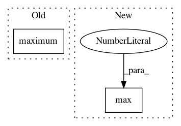

7e1e3ecee5930c527c7f1c89cdd4719d826095e5,chainercv/links/model/mask_rcnn/misc.py,,segm_to_mask,#Any#Any#Any#Any#,54
Before Change
padded_mask[1:-1, 1:-1] = sgm
bb_height = np.maximum(bb[2] - bb[0], 1)
bb_width = np.maximum(bb[3] - bb[1], 1)
crop_mask = cv2.resize(padded_mask, (bb_width, bb_height))
crop_mask = crop_mask > 0.5
After Change
y_min = max(bb[0], 0)
x_min = max(bb[1], 0)
y_max = max(min(bb[2], H), 0)
x_max = max(min(bb[3], W), 0)
y_offset = y_min - bb[0]
x_offset = x_min - bb[1]
mask[i, y_min:y_max, x_min:x_max] = crop_mask[
In pattern: SUPERPATTERN
Frequency: 3
Non-data size: 2
Instances
Project Name: chainer/chainercv
Commit Name: 7e1e3ecee5930c527c7f1c89cdd4719d826095e5
Time: 2019-03-05
Author: yuyuniitani@gmail.com
File Name: chainercv/links/model/mask_rcnn/misc.py
Class Name:
Method Name: segm_to_mask
Project Name: dmlc/gluon-cv
Commit Name: 74475cddbe3defe8be72abd1d98940475809646d
Time: 2018-04-09
Author: cheungchih@gmail.com
File Name: scripts/detection/ssd/train_ssd.py
Class Name:
Method Name: train
Project Name: dmlc/gluon-cv
Commit Name: d1f4a9f474c547b099aa67619f7ba035a9f8ffbc
Time: 2018-04-07
Author: cheungchih@gmail.com
File Name: scripts/detection/ssd/train_ssd.py
Class Name:
Method Name: train